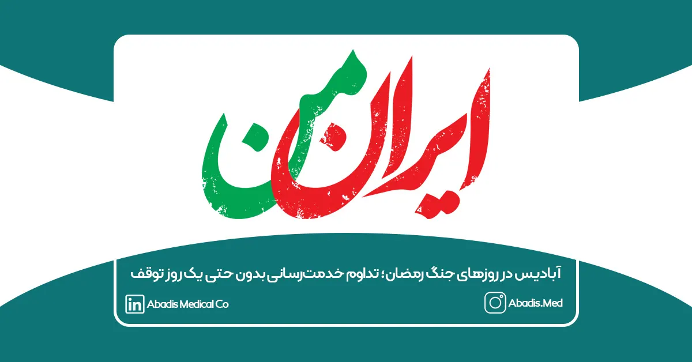
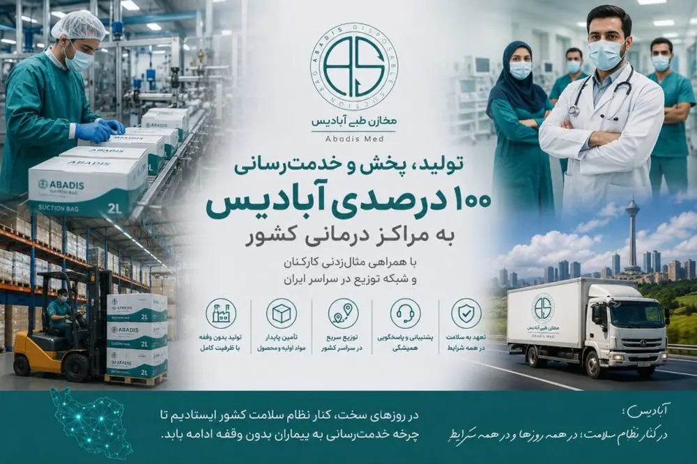

«تولید، پخش و خدمترسانی ۱۰۰ درصدی آبادیس به مراکز درمانی کشور با همراهی مثالزدنی کارکنان و شبکه توزیع در سراسر ایران»
در روزهایی که کشور با شرایط ویژه و نگرانیهای ناشی از جنگ رمضان روبهرو بود، خانواده بزرگ آبادیس بار دیگر نشان داد که مسئولیتپذیری در قبال نظام سلامت کشور تنها یک شعار نیست، بلکه بخشی از هویت این مجموعه است.
با وجود تمامی محدودیتها، نگرانیها و چالشهای موجود، فعالیت شرکت آبادیس در تمامی بخشها بدون وقفه ادامه یافت و هیچیک از واحدهای تولید، فروش، پشتیبانی، انبار، لجستیک و توزیع تعطیل نشدند. از نخستین روزهای بحران تا امروز، تمامی همکاران آبادیس با حضور مسئولانه و مثالزدنی خود، اجازه ندادند کوچکترین اختلالی در تأمین محصولات مورد نیاز مراکز درمانی کشور ایجاد شود.
در این مدت، خطوط تولید شرکت با ظرفیت کامل فعال بودند و فرآیند تأمین، تولید و ارسال محصولات بهصورت مستمر ادامه پیدا کرد. همچنین شبکه توزیع و لجستیک آبادیس با برنامهریزی دقیق، موفق شد سفارشات مشتریان را در تهران و تمامی استانها و شهرستانهای کشور در کوتاهترین زمان ممکن به مقصد برساند.
یکی از ارزشمندترین دستاوردهای این روزها، همراهی و همدلی کمنظیر کارکنان آبادیس بود. همکارانی که با وجود نگرانیهای شخصی و خانوادگی، در کنار مجموعه باقی ماندند و با احساس مسئولیت بالا، نقش خود را در حفظ پایداری زنجیره تأمین تجهیزات پزشکی کشور ایفا کردند.
در طول این دوره:
* تولید تمامی محصولات شرکت بدون وقفه ادامه یافت.
* ارسال سفارشات به بیمارستانها، مراکز درمانی و نمایندگان سراسر کشور انجام شد.
* تیمهای فروش و پشتیبانی بهصورت کامل پاسخگوی مشتریان بودند.
* ناوگان توزیع و لجستیک شرکت بهصورت مستمر فعال ماند.
* موجودی محصولات و مواد اولیه بهگونهای مدیریت شد که هیچگونه کمبود یا اختلالی در تأمین بازار ایجاد نگردد.
* تمامی تعهدات شرکت در قبال مشتریان طبق برنامه اجرا شد.
ما بر این باوریم که تأمین تجهیزات مصرفی پزشکی بخشی از زیرساخت سلامت کشور است و حتی در دشوارترین شرایط نیز نباید متوقف شود. به همین دلیل، آبادیس در تمامی روزهای بحران با تمام ظرفیت در کنار مراکز درمانی، پزشکان، پرستاران و کادر درمان کشور ایستاد تا چرخه خدمترسانی به بیماران بدون وقفه ادامه یابد.
بدون تردید این موفقیت حاصل تلاش و فداکاری کارکنان شریف آبادیس، اعتماد مشتریان وفادار، همراهی نمایندگان فروش و حمایت مراکز درمانی سراسر کشور است.
شرکت آبادیس ضمن قدردانی از تمامی همکاران خود، اعلام میکند که همانند گذشته با تمام توان در مسیر تولید ملی، تأمین پایدار تجهیزات پزشکی و حمایت از نظام سلامت کشور به فعالیت خود ادامه خواهد داد.
آبادیس؛ در کنار نظام سلامت، در همه روزها و در همه شرایط
